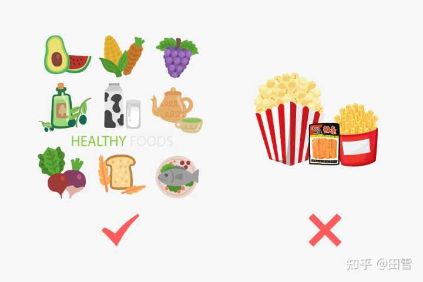
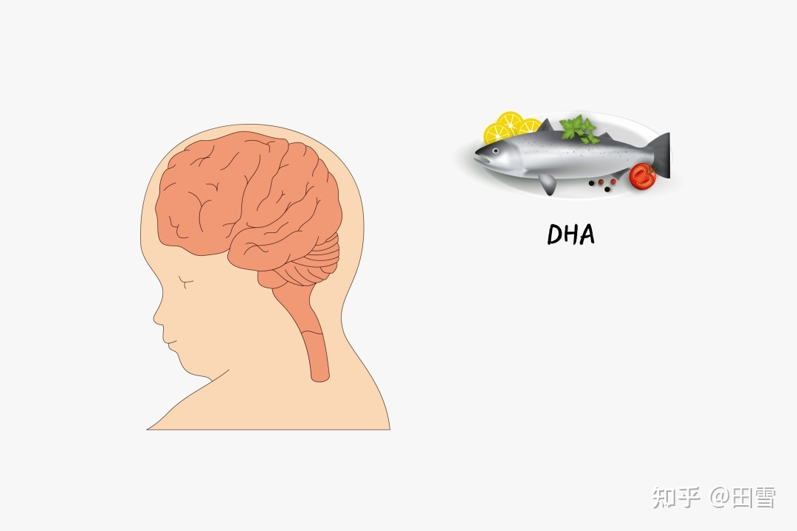
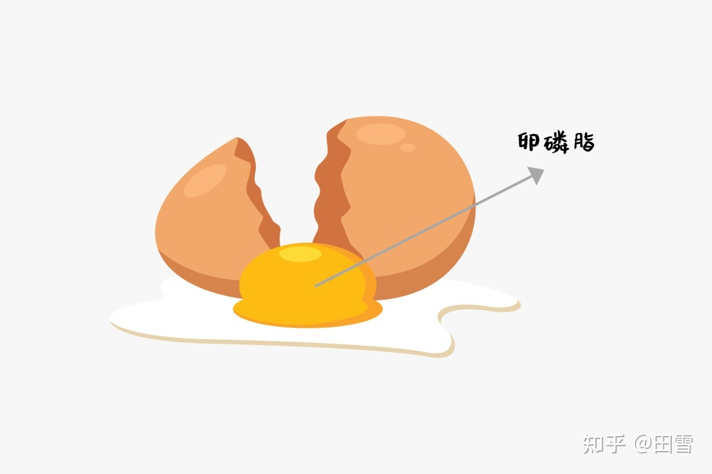

哪些营养物质能促进大脑发育？
作者：田雪 - 知乎
大脑是神经系统最高级的部分，它健不健康、灵不灵光，也决定着我们的生命质量。
所以“补脑”这件事儿，几乎老少通吃，小朋友要补脑希望越补越聪明，成年人希望大脑思维更敏捷，老年人想要预防老年痴呆。
儿童：把握智力发育的黄金期
家长们都非常关注孩子的智力发育。智力的发育主要受两个方面影响，一部分是遗传因素，另一部分由后天的环境塑造。其中，遗传因素的作用大约占30%-80%.
0-3岁是儿童大脑和智力发育的黄金时期。1岁时大脑重量就能达到成人的70%左右，在这一时期智力发育较快，语言和思维能力会迅速增强。
这一阶段的营养补给是智力发育和大脑发育必不可少的物质基础。
吃饱吃好最重要
儿童生长发育阶段，需要通过食物获取大量的营养物质。
这时候的家长们若想要抓大放小、用最省事的方法来保障孩子的营养需求，那就是要格外注重每日新鲜食物的占比。
按照211饮食法的基础结构来观察，每一餐是否满足同时有2个拳头蔬菜、1个拳头主食、1个拳头高蛋白食物，这样的大致比例。
食物要以新鲜食材为主，要减少深度加工食品、油炸食物、甜饮料、休闲零食。

认真享用一日三餐，甚至半晌合理加餐，注重食物品质、注重科学的搭配，就可以让孩子获得智力发育所需要的综合营养。
这样的饮食思路，远胜于额外花钱购买特定的“补脑”、“益智”产品。如果总是花不少钱买“益智”产品，却每天吃的很糟糕，就本末倒置了。
额外关注补脑的两大要素
❶ DHA

DHA，便是广为人知的，对大脑和神经的发育具有促进作用的成分。
DHA(即二十二碳六烯酸)是视网膜光受体中最丰富的多不饱和脂肪酸，同时DHA是大脑细胞膜的重要构成成分，参与脑细胞的形成和发育，维持神经细胞的正常生理活动，参与大脑思维和记忆形成过程。
DHA可以在体内由α-亚麻酸生成，但合成量相对较少，要重视通过膳食直接补充。《中国居民膳食营养素参考摄入量》(2013)推荐婴幼儿DHA的适宜摄入量为100mg/d，大约相当于10克三文鱼。
在日常生活中，DHA的来源有
-
深海鱼类：鲔鱼、三文鱼、鲑鱼、沙丁鱼、金枪鱼、黄花鱼、秋刀鱼、鳝鱼、带鱼等；
-
海藻类：紫菜、裙带菜、海带、裙带菜、龙须菜等；
-
其他：虾、蟹、贝类、坚果等。
主要还是“以吃为主，以补为辅”，在饮食不能补充足够营养的情况下，再考虑营养补充剂，因为后者价格昂贵且吸收率不高。
❷ 卵磷脂

除了DHA，卵磷脂也是神经系统发育中必不可少的原料。
脑神经细胞中卵磷脂的含量约占其质量的17%~20%，卵磷脂的充分摄入能促进大脑神经递质的合成，从而促进神经突触间的交流，提高记忆与智力水平。
日常生活中，卵磷脂的来源十分广泛，一般来说并不容易缺乏。常见食物诸如蛋黄、肉类、海鲜类、动物内脏，都含有丰富的卵磷脂。
所以，要注重饮食多样化，鱼肉蛋奶都要吃够数，尽量不要养成挑食偏食的习惯。均衡的营养摄入才是益智补脑的关键。
民间传言不可信
以形补形是中国传统观念里的食补认知。“核桃补脑”就是典型的例子，因为它形似大脑，所以总被当作是补脑神器，多吃核桃会变聪明成了很多家长的共识。
从营养学的角度来看，核桃补脑并没有特殊的功效。虽然它当中含有一定量的α-亚麻酸，是体内不可缺少的必需脂肪酸，在体内可以转化为DHA。但这并非是核桃的专利，杏仁、花生、芝麻等坚果同样可以。
成年：年纪轻轻却记忆减退
随着生活节奏的加快、工作压力的增加，不少年轻人会有记忆力减退的苦恼，总觉得自己记不住事儿。
但这一时期人的大脑发育已经成熟，通过促进脑神经发育来缓解记忆力减退，几乎不太现实。
反而，应该反观一下我们的生活方式。
熬夜
成年人的白天基本被工作占据，晚上就想有更多的时间与自己独处，可是抱着手机躲在被窝里，一不小心就成了熬夜冠军。
熬夜和睡眠不足带来的危害不仅仅是增加心脑血管疾病的发生风险，同时也与记忆力下降有关。
研究显示，熬夜和睡眠不足会改变海马组织神经结构和功能，降低神经元的可塑性；另一方面，还会减少海马体的细胞增殖，导致认知能力降低，久而久之就会有记忆力减退，觉得脑子不好使的情况。
吸烟
吸烟是很多人缓解压力的方式，但是吸烟对人体健康的危害可不仅仅体现在肺部。
香烟中的尼古丁、焦油等物质的摄入会使脑神经损伤，大脑发生萎缩，影响注意力和记忆力，从而增加罹患老年痴呆的风险。
不良饮食
许多年轻人更倾向于从高脂高糖的食物中追求快乐，炸鸡啤酒加可乐，一不小心能量摄入就超标了。
高能量的摄入不仅仅会导致脂肪的蓄积“长胖”，同时也会损伤神经突触的可塑性，损害认知。
不良的生活方式是损害年轻人脑部健康的主要诱因，如果不改变自己的生活方式，就很难获得健康的身体。
不管你是在啤酒里加枸杞，还是可乐里加党参，都不如早点洗洗睡了来的可靠踏实。